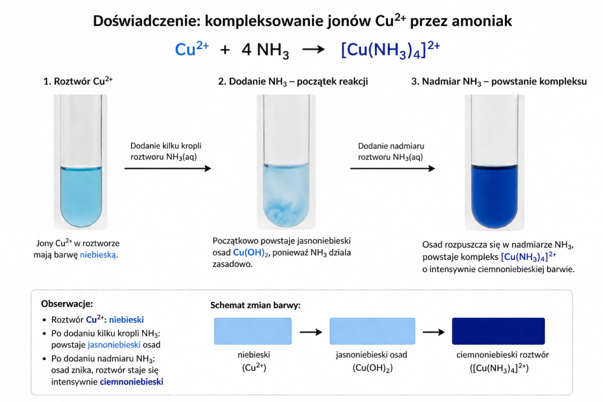
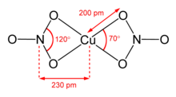

Miedź jest metalem o barwie miedzianej, jest jednym lepszych przewodników prądu i elektryczności. Metal ten, z uwagi na potencjał większy od zera, nie reaguje z zasadami, wodą i kwasami nieutleniającymi, roztwarza się tylko w kwasach utleniających – \(H_{2}SO_{4}^{stez};HNO_{3}^{stez};HNO_{3}^{roz}\) zgodnie z równaniami reakcji:
\[3Cu + 8HNO_{3}^{roz} \rightarrow 3Cu\left( NO_{3} \right)_{2} + 4H_{2}O + 2NO\]
\[Cu + 4HNO_{3}^{st} \rightarrow Cu\left( NO_{3} \right)_{2} + 2NO_{2} + 2H_{2}O\]
\[Cu + 2H_{2}SO_{4}^{stez} \rightarrow CuSO_{4} + SO_{2} + 2H_{2}O\]
Sole miedzi (II) krystalizują najczęściej w postaci hydratów, skąd wynika ich charakterystyczna niebieska albo czasem zielona barwa. Przykładem jest \(CuSO_{4}\) . Związek ten krystalizuje jako hydrat \(CuSO_{4}·5H_{2}O\) zwany dalej witriolem miedzi o intensywnym niebieskim zabarwieniu. Pod wpływem ogrzewania do temperatury 102°C traci dwie cząsteczki wody stając się \(CuSO_{4}·3H_{2}O\) a następnie w monohydrat. Powyżej 197°C staje się bezwodnym, bezbarwnym \(CuSO_{4}\) .
Jon \(Cu^{2 +}\) ma niebieską barwę w roztworach wodnych, chętnie robi kompleksy z wieloma ligandami, maturalnie należy podkreślić kompleksotwórcze zachowanie wobec \(NH_{3}\) , \(Cl^{-}\) , \(OH^{-}\) . W reakcji kationów miedzi z amoniakiem zachodzi reakcja:
\[Cu^{2 +} + 4NH_{3} \rightarrow Cu\left( NH_{3} \right)_{4}^{2 +}\]

Powstały kompleks jest granatowy; jest łatwo zaobserwować jego powstawanie podczas reakcji.
Z roztworów miedzi (II) możemy łatwo wytrącić ciężko rozpuszczalny jasnoniebieski wodorotlenek miedzi:
\[Cu^{2 +} + 2OH^{-} \rightarrow Cu(OH)_{2}\]
Jony miedzi dają również zielone związki kompleksowe –np. tetrachloromiedziany (II) z nadmiarem \(Cl^{-}\)
\[Cu^{2 +} + 4Cl^{-} \rightarrow CuCl_{4}^{2 -}\]
Wodorotlenek miedzi jest niestabilny, powoli rozkłada się do tlenku, zgodnie z reakcją:
\[Cu(OH)_{2} \rightarrow CuO + H_{2}O\]
Nie możliwe jest jego przechowywanie – musi być za każdym razem przyrządzony na świeżo.
Wodorotlenek ten jest amfoteryczny, rozpuszcza się w kwasach i nadmiarach zasad zgodnie z równaniami:
\[Cu(OH)_{2} + 2H^{+} \rightarrow Cu^{2 +} + 2H_{2}O\]
\[Cu(OH)_{2} + 2OH^{-} \rightarrow Cu(OH)_{4}^{2 -}\]
Powstały jon kompleksowy ma również niebieską barwę, ale ciemniejszą niż \(Cu^{2 +}\)
Wodorotlenek rozpuszcza się w \(NH_{3}\) z utworzeniem jonu kompleksowego – tetraaminomiedzi (II)
\[Cu(OH)_{2} + 4NH_{3} \rightarrow Cu\left( NH_{3} \right)_{4}^{2 +} + 2OH^{-}\]
Oczywiście nadmiar jonów \(OH^{-}\) dodany do \(Cu^{2 +}\) prowadzi od razu do utworzenia związku kompleksowego.
Miedź tworzy związki kompleksowe z większością możliwych ligandów, nawet tak specyficznymi jak \(NO_{3}^{-}\) . W stężonym roztworze \(HNO_{3}\) miedź roztwarza się tworząc związek o budowie kompleksowej:

Związek ten ma charakterystyczną zieloną barwę.
Popularne tlenki miedzi to \(CuO\) i \(Cu_{2}O\) .
Tlenek \(CuO\) , otrzymywany jest przez odwodnienie \(Cu(OH)_{2}\)
\[Cu(OH)_{2} \rightarrow CuO + H_{2}O\]
Tlenek ten ma czarną barwę. Mimo, iż sklasyfikowany jest jako tlenek amfoteryczny, dość niechętnie reaguje z zasadami. Z kwasami daje sole miedzi (II), z wodą nie reaguje.
Drugą metodą otrzymywania tego tlenku jest przepuszczanie \(O_{2}\) nad rozgrzaną miedzią. Miedź pokrywa się wówczas czarnym osadem tlenku \(CuO\) , zgodnie z reakcją:
\[2Cu + O_{2} \rightarrow 2CuO\]
Reakcję tę można używać do wykrycia obecności tlenu w mieszaninie gazowej.
Ogólnie związki miedzi (I) najczęściej otrzymywane są przez redukcję związków miedzi (II). Przykładem jest otrzymywanie tlenku \(Cu_{2}O\) .
Drugi z tlenków, \(Cu_{2}O\) otrzymywany jest przez dodanie słabych reduktorów do związków miedzi (II) – takich jak sole zawierające \(Cu^{2 +}\) , wodorotlenek \(Cu(OH)_{2}\) czy związki kompleksowe posiadające w swojej strukturze anion \(Cu(OH)_{4}^{2 -}\) . Jako słabych reduktorów używa się najczęściej związków siarki (IV) – anionu \(SO_{3}^{2 -}\) lub tlenku \(SO_{2}\) i aldehydów (klasa związków organicznych).
\[2Cu(OH)_{4}^{2 -} + SO_{3}^{2 -} + 4H^{+}\ \rightarrow Cu_{2}O + SO_{4}^{2 -} + \ 6H2O\]
\[2Cu^{2 +} + SO_{2} + 3H_{2}O \rightarrow Cu_{2}O + SO_{4}^{2 -} + 6H^{+}\]
Tlenek \(Cu_{2}O\) ten jest czerwony, na powietrzu powoli utlenia się do \(CuO\)
Dodatek nadmiaru anionów \(CN^{-}\) powoduje utworzenie redukcję miedzi do jonów miedzi (I), utworzenie ciężko rozpuszczalnego \(CuCN\) i dicyjanu \((CN)_{2}\)
\[2Cu^{2 +} + 4CN^{-} \rightarrow 2CuCN + (CN)_{2}\]
Dicyjan=
Sole miedzi (I) otrzymujemy przez działanie \(SO_{2}\) na roztwory zawierające kation miedzi \(Cu^{2 +}\) i odpowiedni przeciwjon, szczególnie popularne są sole miedzi (I)z halogenami
\[Cu^{2 +} + Cl^{-} + \ SO_{2} \rightarrow CuCl + SO_{4}^{2 -}\]
Sole miedzi (I) ogólnie są nierozpuszczalne w wodzie, mogą rozpuszczać się w amoniaku z utworzeniem jonu kompleksowego \(Cu\left( NH_{3} \right)_{2}^{+}\)
Analogicznie dodatek jodków do soli miedzi dwa daje jodek miedzi (I) i wolny jod:
\[2Cu^{2 +} + 4I^{-} \rightarrow 2CuI + I_{2}\]
Reakcji tej, poza otrzymywaniem jodku miedzi można używać również do określenia ilość miedzi w roztworze. Po przeprowadzeniu tej reakcji można otrzymany jod zmiareczkować przy użyciu \(S_{2}O_{3}^{2 -}\) , zgodnie z równaniem reakcji:
\[I_{2} + S_{2}O_{3}^{2 -} \rightarrow 2I^{-} + S_{4}O_{6}^{2 -}\]
Znając ilość tiosiarczanu będziemy znać ilość powstałego jodu, a tym samym określimy ile miedzi użyliśmy do reakcji.
Dodatek silnego kwasu do tlenku miedzi (I) powoduje dysproporcjonację miedzi(I) z utworzeniem wolnej miedzi \(Cu\) oraz siarczanu miedzi:
\[Cu_{2}O + H_{2}SO_{4} \rightarrow Cu + CuSO_{4} + \ H_{2}O\]
Związku miedzi (I) są źle rozpuszczalne w wodzie (wszystkie, kation nie istnieje sam), natomiast chętnie tworzy kompleksy z \(Cl^{-}\) i \(CN^{-}\)
Np. w reakcji chlorku miedzi (I) z anionami chlorkowymi powstaje anion dichloromiedzianowy (I)
\[CuCl + Cl^{-} \rightarrow CuCl_{2}^{-}\]
W przypadku użycia cyjanku produkt jak i jego geometria zależy od stosunku użytych reagentów:
\[CuCN + CN^{-} \rightarrow Cu(CN)_{2}^{-}\]
\[CuCN + 2CN^{-} \rightarrow Cu(CN)_{3}^{2 -}\ \]
\[CuCN + 3CN^{-} \rightarrow Cu(CN)_{4}^{3 -}\ \]
\(Cu(CN)_{2}^{-}\) jest liniowy; \(Cu(CN)_{2}^{-}\) trójkątny, a \(Cu(CN)_{4}^{3 -}\) ma strukturę płaskokwadratową.
Miedź na powietrzu pokrywa sie patyną, co skutkuje charakterystyczną zielona barwą dachów i rzeźb. Zachodzi wówczas reakcja:
\[2Cu + CO_{2} + H_{2}O + O_{2} \rightarrow \lbrack Cu{(OH)\rbrack}_{2}CO_{3}\]
Srebro
Jest srebrzyste, występuje praktycznie tylko na +I stopniu utlenienia (wyjątkowo może być na +II, jednak związki takie są bardzo silnymi utleniaczami)
Warto wiedzieć, ze w zasadzie dobrze rozpuszczalna sól srebra to \(AgNO_{3}\) , dodatkowo octan i siarczan są średnio rozpuszczalne. Można więc wyciągnąć wniosek, że jeżeli jakiś kation wytrąca sól po dodaniu jakiekolwiek anionu to tym kationem najpewniej jest to srebro.
Wart znać barwy soli srebra i anionów halogenów:
\(AgCl \rightarrow\) biały, rozpuszczalny w \(\ NH_{3}\) :
\[AgCl + 2NH_{3} \rightarrow Ag\left( NH_{3} \right)_{2}^{+} + Cl^{-}\]
\(AgBr \rightarrow\) żołtawy, nierozpuszczalny w \(NH_{3}\)
\(AgI \rightarrow\) zółty, nierozpuszczalny w \(NH_{3}\)
\(Ag_{2}CrO_{4} \rightarrow\) używany \(\ \) jako wskaźnik w miareczkowaniu strąceniowaym chlorków; czerwony osad
Srebro jako metal jest rozpuszczalne tylko w kwasach utleniających z wydzieleniem odpowiednich tlenków:
\[Ag + 2HNO_{3}^{stez} \rightarrow AgNO_{3} + NO_{2} + H_{2}O\]
\[3Ag + 4HNO_{3}^{roz} \rightarrow 3AgNO_{3} + 2NO + 2H_{2}O\]
\[4Ag + 2H_{2}SO_{4}^{stez} \rightarrow Ag_{2}SO_{4} + SO_{2} + 2H_{2}O\]
Srebro również, tak jak i miedź, ulega reakcji kompleksowania przez amoniak:
\[AgCl + 2NH_{3} \rightarrow Ag\left( NH_{3} \right)_{2}^{+} + Cl^{-}\]
Wodorotlenek srebra jest nierozpuszczalny, można go strącić alkalizując roztwór zawierający kationy \(Ag^{+}\) :
\[Ag^{+} + OH^{-} \rightarrow AgOH\]
Wodorotlenek jest po strąceniu biały, jest on niestabilny i dosłownie w oka mgnieniu rozkłada się do brunatnego tlenku srebra:
\[2AgOH \rightarrow Ag_{2}O\]
Bardzo często nawet nie jest możliwe zaobserwowanie białego osadu, reakcję możemy zapisać jako:
\[2Ag^{+} + 2OH^{-} \rightarrow Ag_{2}O + H_{2}O\]
Srebro jest kompleksowane również przez inne ligandy, szczególnie popularny jest tiosiarczan
\[Ag^{+} + 2S_{2}O_{3}^{2 -} \rightarrow Ag\left\lbrack S_{2}O_{3} \right\rbrack_{2}^{3 -}\]
Związki srebra, szczególnie halogenki powoli rozkładają się z wydzieleniem srebra:
\[2AgCl \rightarrow 2Ag + Cl_{2}\]
Ta reakcja biegnie bardzo powoli. Była ona stosowana w fotografii do robienia zdjęć.
Złoto jest metalem szlachetnym o złotej barwie. Niekompleksowane, „gołe” jony złota nie występują w roztworach wodnych. Złoto w związkach przyjmuje stopień utlenienia \(+ I\) i \(+ III\) . Złoto roztwarza sie tylko w wodzie królewskiej czyli mieszaninie \(HCl\ i\ HNO_{3}\) w stosunkach objętościowych 3/1. Zachodzi wtedy reakcja:
\[Au + HNO_{3} + HCl \rightarrow AuCl_{4}^{-} + NO_{2}\]
Widać, iż użycie kwasu solnego wynikało z konieczności dostarczenia chlorków, aby zrobić kompleks z złotem.
Cynk
Cynk jest szarawosrebnym metalem, stosowany jako powłoka galwaniczna dla przedmiotów użytkowych. Jest metalem amfoterycznym – roztwarza się w kwasach oraz zasadach z wydzieleniem wodoru:
\[Zn + 2HCl \rightarrow ZnCl_{2} + H_{2}\]
\[Zn + 2H^{+} \rightarrow Zn^{2 +} + H_{2}\]
\[Zn + 2NaOH + 2H_{2}O \rightarrow Na_{2}\left( Zn\lbrack OH\rbrack_{4} \right) + H_{2}\]
\[Zn + 2OH^{-} + 2H_{2}O \rightarrow Zn\lbrack OH\rbrack_{4}^{2 -} + H_{2}\]
Cynk występuje tylko i wyłącznie na (+II) stopniu utlenienia